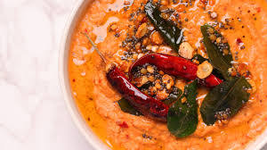

Add oil, garlic, green chillies and sautee. Add Onions and saute well. Add dry chillies, tomato, and tamarind. Fry until the tomatoes are mushy. Grind the mixture into a smooth paste. Temper the mixture with mustard and curry leaves.